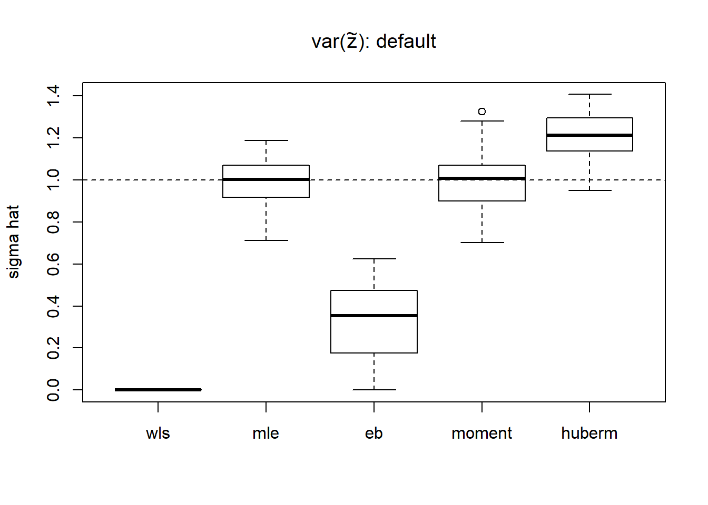
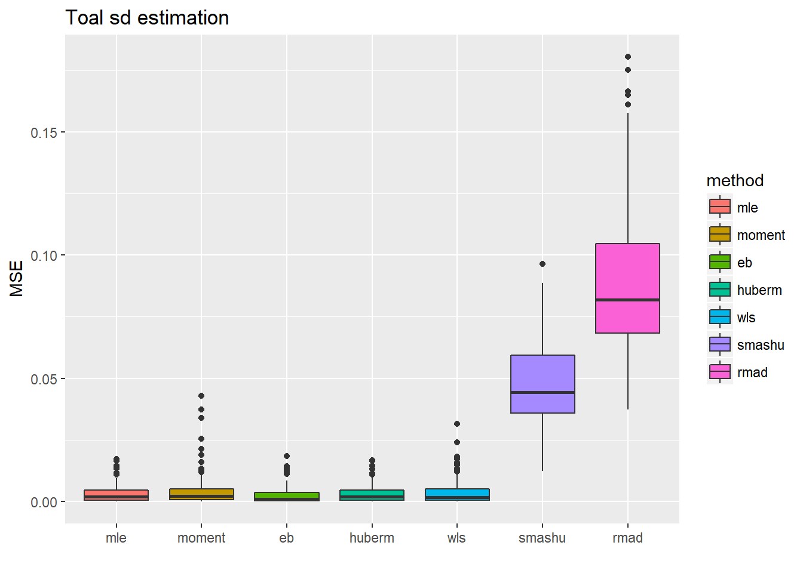

Estimate unknown variance
Dongyue Xie
May 10, 2018
Last updated: 2018-05-16
workflowr checks: (Click a bullet for more information)-
✔ R Markdown file: up-to-date
Great! Since the R Markdown file has been committed to the Git repository, you know the exact version of the code that produced these results.
-
✔ Environment: empty
Great job! The global environment was empty. Objects defined in the global environment can affect the analysis in your R Markdown file in unknown ways. For reproduciblity it’s best to always run the code in an empty environment.
-
✔ Seed:
set.seed(20180501)The command
set.seed(20180501)was run prior to running the code in the R Markdown file. Setting a seed ensures that any results that rely on randomness, e.g. subsampling or permutations, are reproducible. -
✔ Session information: recorded
Great job! Recording the operating system, R version, and package versions is critical for reproducibility.
-
Great! You are using Git for version control. Tracking code development and connecting the code version to the results is critical for reproducibility. The version displayed above was the version of the Git repository at the time these results were generated.✔ Repository version: f7f7273
Note that you need to be careful to ensure that all relevant files for the analysis have been committed to Git prior to generating the results (you can usewflow_publishorwflow_git_commit). workflowr only checks the R Markdown file, but you know if there are other scripts or data files that it depends on. Below is the status of the Git repository when the results were generated:
Note that any generated files, e.g. HTML, png, CSS, etc., are not included in this status report because it is ok for generated content to have uncommitted changes.Ignored files: Ignored: .Rhistory Ignored: .Rproj.user/ Ignored: analysis/figure/ Ignored: log/ Untracked files: Untracked: analysis/binom.Rmd Untracked: analysis/binomial.Rmd Untracked: analysis/overdis.Rmd Untracked: analysis/smashtutorial.Rmd Untracked: docs/figure/poiunknown.Rmd/ Untracked: docs/figure/sigma.Rmd/ Untracked: docs/figure/smashtutorial.Rmd/ Unstaged changes: Modified: analysis/ashpmean.Rmd Modified: analysis/nugget.Rmd Modified: analysis/unknownvar.Rmd
Expand here to see past versions:
| File | Version | Author | Date | Message |
|---|---|---|---|---|
| Rmd | 4a0d473 | Dongyue | 2018-05-16 | edit |
| Rmd | 6fb0c49 | Dongyue | 2018-05-16 | edit |
| Rmd | 54a4608 | Dongyue | 2018-05-16 | edit |
| Rmd | 4124935 | Dongyue | 2018-05-13 | estiamte unknown sigma |
| Rmd | 091d309 | Dongyue | 2018-05-13 | estiamte unknown sigma |
| Rmd | b4bfaeb | Dongyue | 2018-05-13 | estiamte unknown sigma |
| Rmd | dee343a | Dongyue | 2018-05-13 | estiamte unknown sigma |
| Rmd | 0ef0c0c | Dongyue | 2018-05-13 | estiamte unknown sigma |
| Rmd | 365661a | Dongyue | 2018-05-13 | estiamte unknown sigma |
To recap, the model we are considering is \(Y_t=\mu_t+u_t+\epsilon_t\) where \(u_t\sim N(0,\sigma^2)\) and \(\epsilon_t\sim N(0,s_t^2)\).
In previous analysis, we assume \(\sigma^2\) is known so when estimating \(\mu_t\), we simply plug \(\sigma^2\) in the smash.gaus function. However, in practice we don’t know the \(\sigma^2\).
Note:
If sigma is NULL in
smash.gaus, thensmash.gausruns 1-2-1 of the algorithm in paper. Ifv.est=F, then it returns estimated \(\mu_t\) from the last 1. Ifv.est=T, then it runs 2 one more time.If sigma is given, then it runs 1 to give \(\hat\mu_t\). If
v.est=T, then it runs 2 one more time. So: even if sigma is given,smash.gauscould still estimate it.Names of the methods are marked in bold for convenience.
Estimate (\(\sigma^2+s_t^2\)) together
When estimating \(\mu_t\), what we actually need is \(\sigma^2+s_t^2\) for smash.gaus.
Method 1(smashu): We can simply feed \(y_t\) to smash.gaus then get estimated \(\mu_t\) and \(\sigma^2+s_t^2\). This is simple and easy. But this method does not take advantage of known \(s_t^2\).
Method 2(rmad): Using “running MAD”(RMAD) method: \(1.4826\times MAD\). MAD stands for median absolute deviation, \(MAD(x)=median|x-median(x)|\). (For normal distribution \(x\sim N(\mu,\sigma^2)\), \(MAD(x)=\sigma MAD(z)\), where \(z\sim N(0,1)\) so \(\sigma=\frac{MAD(x)}{MAD(z)}=1.4826\times MAD(x)\).(\(1/[\Phi^{-1}(3/4)] \approx 1.4826\) )). One advantage of MAD is the robustness. In Xing\(\&\)Stephens(2016), simulations show that SMASH outperforms RMA.
Estimate \(\sigma^2\)
Method 3(moment): It’s easy to show that \(E(Y_t-Y_{t+1})^2=s_t^2+s_{t+1}^2+2\sigma^2\). Similarly, \(E(Y_t-Y_{t-1})^2=s_t^2+s_{t-1}^2+2\sigma^2\). Combining two equations and solving for \(\sigma^2\), we have a natural way to estimate it: \(\hat\sigma^2_t=\frac{((Y_t-Y_{t+1})^2+(Y_t-Y_{t+1})^2-2s_t^2-s_{t-1}^2-s_{t+1}^2)}{4}\) for each \(t\). The estimate of \(\sigma^2\) is given by the mean of \(\hat\sigma^2_t\). Using this method as the initialization might be reasonable.
Method 4: This method follows the same idea for estimating variance in Xing\(\&\)Stephens(2016). Since \(Y_t-\mu_t\sim N(0,\sigma^2+s_t^2)\), we define \(Z_t^2=(Y_t-\mu_t)^2\sim (\sigma^2+s_t^2)\chi_1^2\). \(E(z_t^2)=\sigma^2+s_t^2\) and an estimate of \(var(Z_t^2)\) is \(\frac{2}{3}Z_t^4\). It’s then transferred to a mean estimating problem: \(Z_t^2=\sigma^2+s_t^2+N(0,\frac{4}{3}Z_t^4)\). Let \(\tilde Z_t^2=Z_t^2-s_t^2\), then \(\tilde Z_t^2=\sigma^2+N(0,\frac{2}{3}Z_t^4)\). We can either use maximum likelihood estimation(mle), weighted least square(wls), empirical Bayes method (eb) or huber M-estimator(huberm) to estimate \(\sigma^2\).
Simulation: unknown variance \(\sigma^2\).
library(smashrgen)
library(ggplot2)#simulations
n=256
mu=rep(3,n)
plot(mu,main='Mean function')t=1:n/n
var2.ini = (1 + 4 * (exp(-550 * (t - 0.2)^2) + exp(-200 * (t - 0.5)^2) + exp(-950 * (t - 0.8)^2)))
var2 = var2.ini/sqrt(var(var2.ini))
st=sqrt(var2)
plot(var2,type = 'l',main='variance function')
sigma=1
result.def=simu_study_s(mu,st,sigma,'default')
boxplot(result.def,ylab='sigma hat',main=expression(paste('var(',tilde(z),'): default')))
abline(h=sigma,lty=2)
# report MSE
apply(result.def,2,function(x) mean((x-1)^2)) wls mle eb moment huberm
0.99980001 0.01189225 0.50000120 0.01636048 0.05746557 # variance of estimates
apply(result.def,2,var) wls mle eb moment huberm
0.00000000 0.01201028 0.03678069 0.01648428 0.01063082 It seems that the estimate of \(var(Z_t^2)\) is problematic using the default method in Xing\(\&\)Stephens(2016). Some \(Z_t\) are too small. Hence the methods using \(var(Z_t^2)\) do not work well. The weights in wls is \(1/(2/3)Z_t^4)=3/(2Z_t^4)\). It’s very sensitive to small \(Z_t\), which means that the very smallest \(Z_t\) dominates the estimation of \(\sigma^2\).
Though mle estimate is unbiased, it’s variance is large. Thus, using robust estimator is possible a better way. We consider Huber M-estimator. However, since the distribution of \(\tilde Z_t\) is highly skewed to the right, Huber M estimator is not very appropriate in this context. So the parameter k in Huber M estimator is chosen to be 0.99 quantile, which makes it very close to mle.
We then use smash to estimate the \(var(Z_t^2)\).
result.smash=simu_study_s(mu,st,sigma,'smash')
boxplot(result.smash,ylab='sigma hat',main=expression(paste('var(',tilde(z),'): smash')))
abline(h=sigma,lty=2)# report MSE
apply(result.smash,2,function(x) mean((x-1)^2)) wls mle eb moment huberm
0.01280389 0.01189225 0.01148517 0.01636048 0.01185830 # variance of estimates
apply(result.smash,2,var) wls mle eb moment huberm
0.01064015 0.01201028 0.01142961 0.01648428 0.01197457 Now we have much better estimates of \(var(Z_t^2)\) so wls, eb and huberm methods improve a lot. However, it takes significantly more time to run.
Use rmad to estimate the \(var(Z_t^2)\).
result.rmad=simu_study_s(mu,st,sigma,'rmad')
boxplot(result.rmad,ylab='sigma hat',main=expression(paste('var(',tilde(z),'): rmad')))
abline(h=sigma,lty=2)
# report MSE
apply(result.rmad,2,function(x) mean((x-1)^2)) wls mle eb moment huberm
0.04292358 0.01189225 0.01190870 0.01636048 0.01224504 # variance of estimates
apply(result.rmad,2,var) wls mle eb moment huberm
0.02161739 0.01201028 0.01131930 0.01648428 0.01234200 Using rmad gives satisfactory results and runs much faster than smash method.
Simulation: estimate \(\sqrt(\sigma^2+s_t^2)\)
Since what we eventually need is \(\sqrt(\sigma^2+s_t^2)\), we compare performance of all the estimators. For methods estimating \(\sigma^2\), we add known \(s_t^2\) to \(\hat\sigma^2\). Two methods that directly estimate \(\sqrt(\sigma^2+s_t^2)\) are smash and rmad. The measure of accuracy is mean squared error.
To figure out how the improvements of variance estimation help with the mean estimation, we also calculate the MSE of mean estimation using the estimated variance from corresponding methods. To facilitate the comparisons, the results from smash with true variance(smashtrue) are added.
Constant mean function
sigma=1
result.sst=simu_study_sst(mu,st,sigma)
ggplot(df2gg(result.sst$var.est),aes(x=method,y=MSE))+geom_boxplot(aes(fill=method))+ggtitle('Toal sd estimation')+labs(x='')ggplot(df2gg(result.sst$mu.est),aes(x=method,y=MSE))+geom_boxplot(aes(fill=method))+ggtitle('Mean estimation')+labs(x='')For the estimation of total standard deviation estimation(\(\sqrt(\sigma^2+s_t^2)\)), those methods which estimate \(\sigma^2\) first then add \(s_t^2\) perform uniformly better(smaller MSE, smaller variance) than those estimating total sd directly.
The second plot shows the MSE of \(\hat\mu_t\) after substituting the estimated total sd into smash.gaus. The first four methods have slightly better performance(smaller variance mainly), which is kind of as expected since they have more accurate estimate of variance.
Spike mean function
Now we change the mean function from constant to a more complicated one(‘spike’ mean) to see if the performance of methods are consistent.
spike.f = function(x) (0.75 * exp(-500 * (x - 0.23)^2) + 1.5 * exp(-2000 * (x - 0.33)^2) + 3 * exp(-8000 * (x - 0.47)^2) + 2.25 * exp(-16000 *
(x - 0.69)^2) + 0.5 * exp(-32000 * (x - 0.83)^2))
n = 512
t = 1:n/n
mu = spike.f(t)
plot(mu,type='l',main='Mean function')var2.ini = (1 + 4 * (exp(-550 * (t - 0.2)^2) + exp(-200 * (t - 0.5)^2) + exp(-950 * (t - 0.8)^2)))
var2 = var2.ini/sqrt(var(var2.ini))
st=sqrt(var2)
sigma=1
result.spike.sst=simu_study_sst(mu,st,sigma)
ggplot(df2gg(result.spike.sst$var.est),aes(x=method,y=MSE))+geom_boxplot(aes(fill=method))+ggtitle('Toal sd estimation')+labs(x='')
ggplot(df2gg(result.spike.sst$mu.est),aes(x=method,y=MSE))+geom_boxplot(aes(fill=method))+ggtitle('Mean estimation')+labs(x='')Tough the estimate of total sd are more accurate for the first 5 methods(but not significantly better because the magnitude of MSE variance estimations is around \(10^{-2}\) to \(10^{-1}\) ), this did not help with the mean estimation a lot.
Now let’s reduce sample size from 512 to 128.
n = 128
t = 1:n/n
mu = spike.f(t)
#plot(mu,type='l',main='Mean function')
var2.ini = (1 + 4 * (exp(-550 * (t - 0.2)^2) + exp(-200 * (t - 0.5)^2) + exp(-950 * (t - 0.8)^2)))
var2 = var2.ini/sqrt(var(var2.ini))
st=sqrt(var2)
sigma=1
result.spike.sst2=simu_study_sst(mu,st,sigma)
ggplot(df2gg(result.spike.sst2$var.est),aes(x=method,y=MSE))+geom_boxplot(aes(fill=method))+ggtitle('Toal sd estimation')+labs(x='')ggplot(df2gg(result.spike.sst2$mu.est),aes(x=method,y=MSE))+geom_boxplot(aes(fill=method))+ggtitle('Mean estimation')+labs(x='')Increase the noise level: times 2.
n = 512
t = 1:n/n
mu = spike.f(t)
#plot(mu,type='l',main='Mean function')
var2.ini = (1 + 4 * (exp(-550 * (t - 0.2)^2) + exp(-200 * (t - 0.5)^2) + exp(-950 * (t - 0.8)^2)))
var2 = var2.ini/sqrt(var(var2.ini))*2
st=sqrt(var2)
sigma=1*2
result.spike.sst3=simu_study_sst(mu,st,sigma)
ggplot(df2gg(result.spike.sst3$var.est),aes(x=method,y=MSE))+geom_boxplot(aes(fill=method))+ggtitle('Toal sd estimation')+labs(x='')ggplot(df2gg(result.spike.sst3$mu.est),aes(x=method,y=MSE))+geom_boxplot(aes(fill=method))+ggtitle('Mean estimation')+labs(x='')Reduce the noise level: times 1/2.
n = 512
t = 1:n/n
mu = spike.f(t)
#plot(mu,type='l',main='Mean function')
var2.ini = (1 + 4 * (exp(-550 * (t - 0.2)^2) + exp(-200 * (t - 0.5)^2) + exp(-950 * (t - 0.8)^2)))
var2 = var2.ini/sqrt(var(var2.ini))/2
st=sqrt(var2)
sigma=1/2
result.spike.sst4=simu_study_sst(mu,st,sigma)
ggplot(df2gg(result.spike.sst4$var.est),aes(x=method,y=MSE))+geom_boxplot(aes(fill=method))+ggtitle('Toal sd estimation')+labs(x='')ggplot(df2gg(result.spike.sst4$mu.est),aes(x=method,y=MSE))+geom_boxplot(aes(fill=method))+ggtitle('Mean estimation')+labs(x='')Spike mean, non-spatial variance
One assumption of smash is that the variance has spatial features. We now check the performance if this assumption is violated.
n=512
t = 1:n/n
mu = spike.f(t)
set.seed(111)
st=sqrt(runif(n,0,3))
sigma=1
result.spike.nspa=simu_study_sst(mu,st,sigma)
ggplot(df2gg(result.spike.nspa$var.est),aes(x=method,y=MSE))+geom_boxplot(aes(fill=method))+ggtitle('Toal sd estimation')+labs(x='')ggplot(df2gg(result.spike.nspa$mu.est),aes(x=method,y=MSE))+geom_boxplot(aes(fill=method))+ggtitle('Mean estimation')+labs(x='')The variance estimations using smash indeed are not as good as the first five methods, while the mean estimations are not significantly worse but have larger variance.
Summary
Generally, we can simply apply smash.gaus directly to the data if what we are interested in is \(\mu_t\). If we are also interested in \(\sigma\), then the simple MLE is reliable enough.
Session information
sessionInfo()R version 3.4.0 (2017-04-21)
Platform: x86_64-w64-mingw32/x64 (64-bit)
Running under: Windows 10 x64 (build 16299)
Matrix products: default
locale:
[1] LC_COLLATE=English_United States.1252
[2] LC_CTYPE=English_United States.1252
[3] LC_MONETARY=English_United States.1252
[4] LC_NUMERIC=C
[5] LC_TIME=English_United States.1252
attached base packages:
[1] stats graphics grDevices utils datasets methods base
other attached packages:
[1] ggplot2_2.2.1 smashrgen_0.1.0 wavethresh_4.6.8 MASS_7.3-47
[5] caTools_1.17.1 ashr_2.2-7 smashr_1.1-5
loaded via a namespace (and not attached):
[1] Rcpp_0.12.16 plyr_1.8.4 compiler_3.4.0
[4] git2r_0.21.0 workflowr_1.0.1 R.methodsS3_1.7.1
[7] R.utils_2.6.0 bitops_1.0-6 iterators_1.0.8
[10] tools_3.4.0 digest_0.6.13 tibble_1.3.3
[13] evaluate_0.10 gtable_0.2.0 lattice_0.20-35
[16] rlang_0.1.2 Matrix_1.2-9 foreach_1.4.3
[19] yaml_2.1.19 parallel_3.4.0 stringr_1.3.0
[22] knitr_1.20 REBayes_1.3 rprojroot_1.3-2
[25] grid_3.4.0 data.table_1.10.4-3 rmarkdown_1.8
[28] magrittr_1.5 whisker_0.3-2 backports_1.0.5
[31] scales_0.4.1 codetools_0.2-15 htmltools_0.3.5
[34] assertthat_0.2.0 colorspace_1.3-2 labeling_0.3
[37] stringi_1.1.6 Rmosek_8.0.69 lazyeval_0.2.1
[40] munsell_0.4.3 doParallel_1.0.11 pscl_1.4.9
[43] truncnorm_1.0-7 SQUAREM_2017.10-1 R.oo_1.21.0 This reproducible R Markdown analysis was created with workflowr 1.0.1